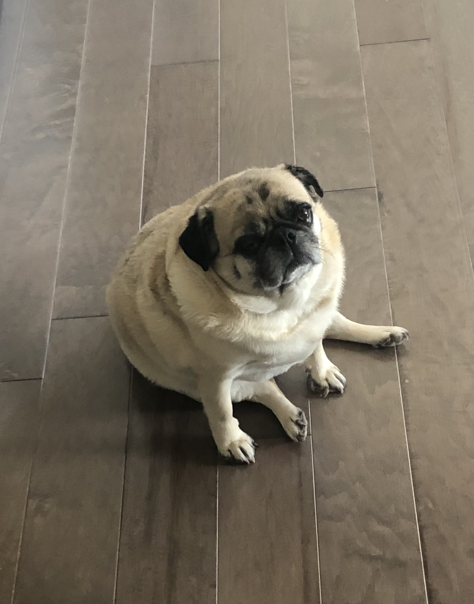

Introduction

I'm currently a rising senior at UNC Charlotte studying Computer Science with a focus in Cybersecurity with a hope of one day mastering Network systems. I'm excited to learn front-end web applications this semester. This will be one of my first times working with HTML conventionally.
- Personal Background: I'm a 22-year-old college student. I like to explore places, take photos, and play video games in my free time.
- Professional Background: After a full-time semester during the start of my junior year of college, I managed to settle a paid internship over the summer with The Heritage Foundation.
- Academic Background: I'm currently a junior at UNC Charlotte studying computer science with a focus on Cyber Security. I am formerly a student from Texas State University.
- Courses I'm taking & Why:
- ITIS 3135: Required and fun class.
- ITSC 2181: Required and interesting class.
- ITSC 3160: Required and relative elective.
- STAT 2122: Required class.